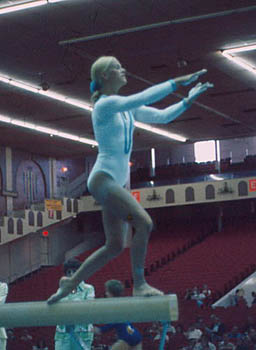

Roxanne Pierce (USA)
1971 Pan American Games AA
Champion
1975 Pan American Games AA Silver Medalist

Roxanne was born in Plainfield, NJ on October 4, 1954, and got her start in gymnastics at the Mar-Va-Teens club. She also trained at the Southern Connecticut Gymnastics Club with Muriel Grossfeld and at the Manettes Club in Philadephia with Bill and Ginny Coco. Pierce was inducted into the USA Gymnastics Hall of Fame in 1996.
She moved to New Mexico in 1979 and became a member of the Albuquerque Fire Department in 1982, working as fire fighter, paramedic and emergency medical dispatcher (as of 2002). She has two teenage daughters: Celestina and Sonyalena.
Competition Results
1970
AAU Championships: 5th AA, 2nd V, 3rd UB, 3rd FX
USGF Championships: 4th AA
1971
AAU Championships: 2nd AA
Chunichi Cup: 9th AA
Pan American Games: 1st Team, 1st AA, 1st V, 1st UB, 3rd B, 3rd FX
Riga International: 5th V
USA-USSR Dual Meet: 2nd Team, 9th AA
US Championships: 4th AA
1972
Olympic Games: 4th Team, 33rd AA
Scarborough Winstonettes Invitational: 1st AA, 1st UB, 1nd V, 2nd B, 2nd FX
USA-JPN Dual Meet: 1st V, 2nd UB
USGF Championships: 2nd V, 2nd UB
1973
AAU Championships: 2nd AA, 1st V, 1st UB, 2nd FX
HUN-USA Dual Meet: 4th AA
Riga International: 6th AA
USA-ROM Dual Meet: 8th AA
USGF Elite Championships: 2nd AA, 1st V, 1st UB, 3rd FX, 5th B
1974
AAU Championships: 4th AA, 2nd UB
Elite Qualification Meet: 2nd AA
US World Trials: 8th AA
USGF Elite Championships: 5th AA, 2nd V, 3rd UB
1975
AAU Championships: 1st AA, 1st B, 2nd UB
Elite Qualification Meet: 2nd AA
Mardi Gras Invitational: 4th AA
Pan American Games: 1st Team, 2nd AA, 1st UB, 3rd V, 3rd FX
Pan American Trials: 6th AA
USGF Elite Championships: 5th AA, 6th B
1976
AAU Championships: 1st AA
AIAW Nationals: 3rd AA, 1st FX, 2nd B, 5th UB
USA-CAN Dual Meet: 8th AA
USA Championships: 22nd AA
US Olympic Trials: 25th AA
This page was created on March 13,
2005 and was last updated on February 15, 2021.
© Gymn Forum